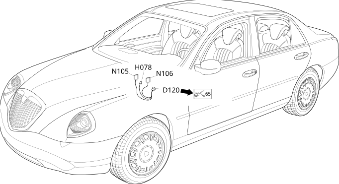

64 diffused air unit
- Path
- Electrical equipment > Wiring > 64 diffused air unit
- Kind
- wiring harness
- Applies to
- all engines; all production periods
- Interactive page
- https://sloeber94.github.io/elrnDB-lThss/en/#/207393
Applies to: all engines; all production periods
